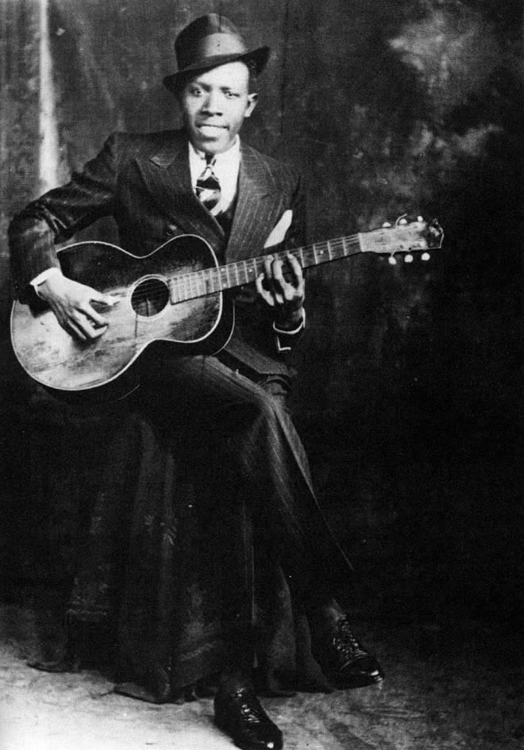
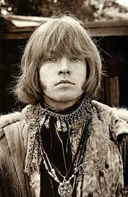
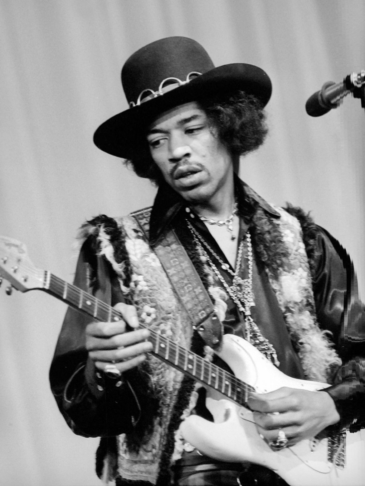
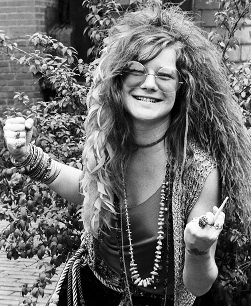
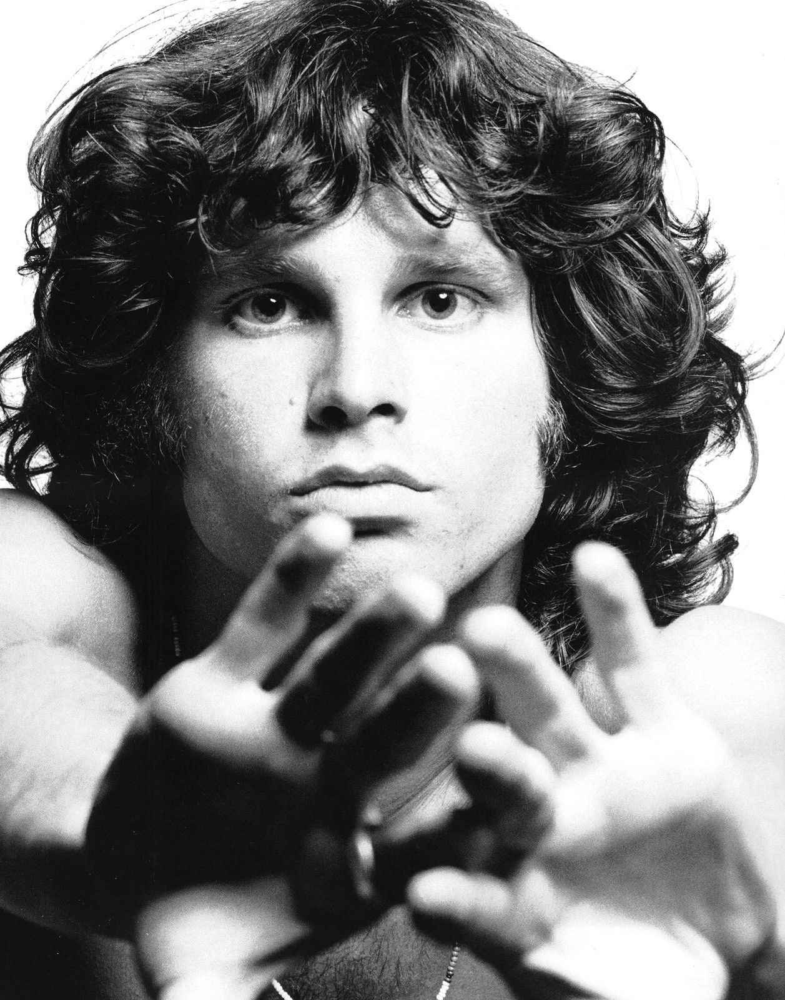
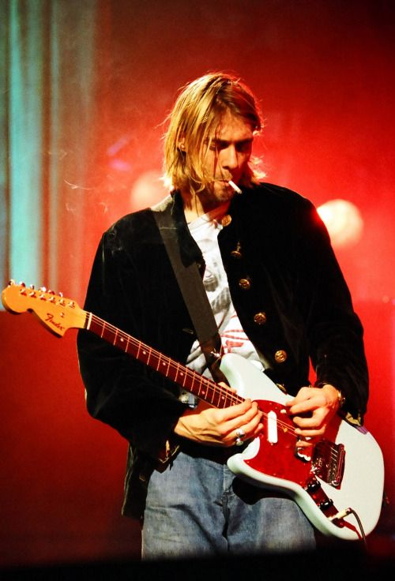

Uno de los misterios más grandes de la música se relaciona con el famoso Club de los 27
, denominación que se refiere al grupo de músicos célebres que comparten una fúnebre singularidad: haber muerto prematuramente a la edad de 27 años, en casos relacionados mayormente con el abuso de drogas y alcohol, accidentes inexplicables e incluso el suicidio.
MIEMBROS DEL CLUB DE LOS 27
|  |
ROBERT JHONSON (Mayo 8, 1938)Fue el primero en esa lista a la que la gente llamó |
|  |
BRIAN JONES (Febrero 28, 1969)El británico Brian Jones fue un músico incomprendido o poco compatible con la industria musical de su tiempo. Fue fundador del mítico grupo Rolling Stones, al cual perteneció hasta un mes antes de su muerte. Jones desarrolló una fuerte adicción a las drogas y dejó la banda de Mick Jagger en 1969. Poco después apareció muerto ahogado en la piscina de su casa. |
|  |
JIMI HENDRIX (Septiembre 18, 1970)Considerado uno de los más grandes guitarristas de la historia de la música, Jimi Hendrix también fue conocido por su inigualable estilo. Tuvo una carrera profesional muy breve, de apenas 4 años, pero que influyó muchísimo en la historia del rock. Su estilo único (que lo llevaba a excentricidades como prenderle fuego a una guitarra o tocarla con los dientes) aparte de un enorme talento lo llevaron a un éxito rotundo. Fue el artista mejor pagado en el festival de Woodstock. En septiembre de 1970, murió ahogado en su propio vómito, según el informe de su autopsia. |
|  |
JANIS JOPLIN (Octubre 4, 1970)Fue una cantante estadounidense. Cuando estaba en el punto más alto de su carrera, la cantante fue conocida como la reina del Rock and Roll y del Soul psicodélico. El cuerpo sin vida de Janis Joplin fue descubierto por uno de sus asistentes en un motel de Los Ángeles en octubre de 1970. La cantante era adicta a la heroína. Se decía que se inyectaba unos US$200 de esa sustancia al día. Según el informe oficial, murió de una sobredosis. |
|  |
JIM MORRISON (July 3, 1971)El cantante de The Doors, quien solía improvisar poemas en el escenario, fue encontrado muerto en la bañera de su apartamento de París el 3 de julio de 1971. No se hizo una autopsia porque el médico que primero llegó a atenderlo aseguró que no había nada sospechoso en la casa y que la causa de la muerte había sido un fallo cardiaco. Desde entonces, mucho se ha escrito sobre la muerte de Jim Morrison. Algunos de sus amigos aseguran que se trató de una sobredosis. |
|  |
KURT COBAIN (Abril 5, 1994) Kurt Cobain fue el compositor, cantante y guitarrista de la banda Nirvana, con la que obtuvo un arrollador éxito (incluyendo triple disco de platino en EEUU con su segundo álbum |
AMY WINEHOUSE (Julio 23, 2011)Fue una cantante y compositora británica conocida por sus mezclas de diversos géneros musicales entre los que destacan el jazz, R&B, soul, rock y ska.. Esta muchacha de voz explosiva lanzó su primer disco en 2003, con regular éxito en Gran Bretaña, pero tres años más tarde, con |